3-3-SSH远程安全登录
为什么需要SSH
如果一个用户从本地计算机，使用SSH协议登录另一台远程计算机，我们就可以认为，这种登录是安全的，即使被中途截获，密码也不会泄露。
Secure Shell是Linux系统首选的登录方式，以前使用FTP或telnet登录服务器，都是以明文的形式在网络中发送账号密码，很容易被黑客截取到数据，篡改后威胁服务器数据安全。因此如何对数据加密，安全传输是重中之重，主要方式有两种：
- 对称加密（秘钥加密）
- 非对称加密（公钥加密）
学习SSH背景
1、任务背景
为了最大程度的保护公司内网服务器的安全，公司内部有一台服务器做跳板机（JumpServer）。
运维人员在维护过程中首先要统一登录到这台服务器，然后再登录到目标设备进行维护和操作。
由于开发人员有时候需要通过跳板机登录到线上生产环境查看一些业务日志，所以现在需要运维人员针对不同的人员和需求对==账号密码进行统一==管理，并且遵循权限最小化原则。
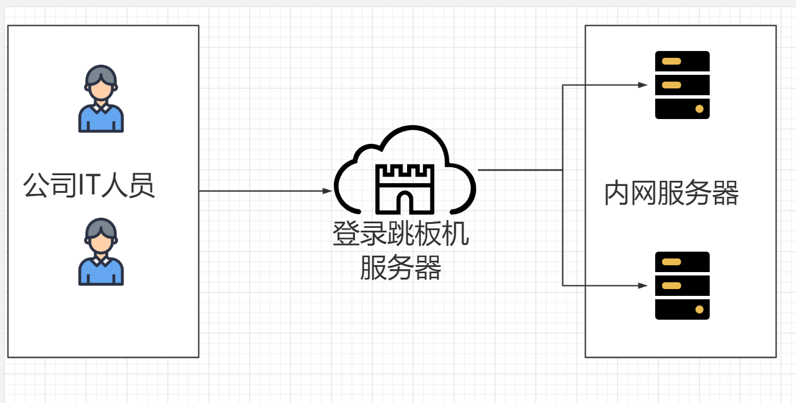
2、任务要求
- 跳板机上为每个开发人员创建一个账号，并且只能在指定的目录里管理自己的文件。
- 线上生产服务器，禁止使用root用户远程登录。
- 线上生产服务器sshd服务不允许使用默认端口。
- 线上生产服务器上开发人员使用的用户，密码使用工具随机生成。
3、任务拆解
- 跳板机上为开发人员==创建用户==及公共==目录==供开发人员使用，并做好权限控制
- 所有线上生产服务器==搭建ssh服务==
- 对于ssh服务根据需求进行配置
- 禁止root用户远程登录
- 更改默认端口（22=>10086）
- 线上生产服务器创建devyu用户，并安装工具来生成随机密码
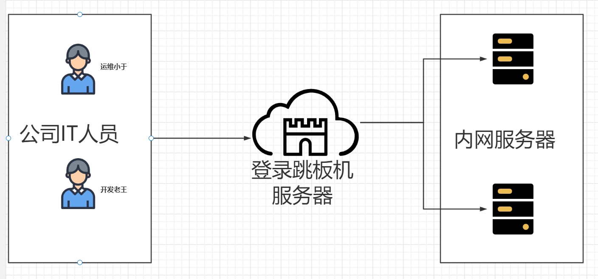
4、涉及知识点
- 权限管理（旧知识点），文件权限，用户权限
- ==ssh服务配置（新知识点）==
- 生成随机密码工具（新知识点）
二、理论储备
1、什么是服务（程序）
- 运行在操作系统后台的一个或者多个程序，为系统或者用户提供特定的
服务 - 可靠的，并发的，连续的不间断的运行，随时接受请求
- 通过交互式提供服务
2、服务架构模型
1、B/S架构
- B/S(browser/server) 浏览器/服务器
概念：这种结构用户界面是完全通过浏览器来实现，使用http协议、https协议
优势：节约开发成本
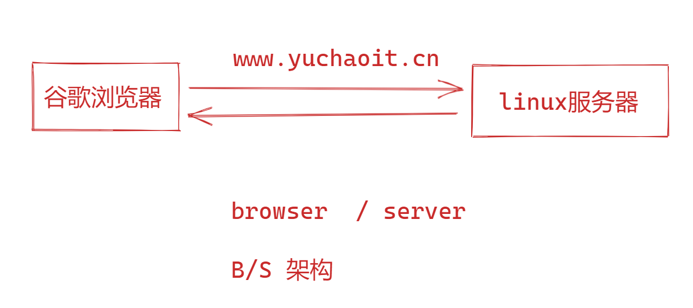
2、C/S架构
- C/S（client/server）客户端/服务器
概念：指的是客户端和服务端之间的通信方式，客户端提供用户请求接口，服务端响应请求进行对应的处理，并返回给客户端
优势：安全性较高，一般面向具体的应用
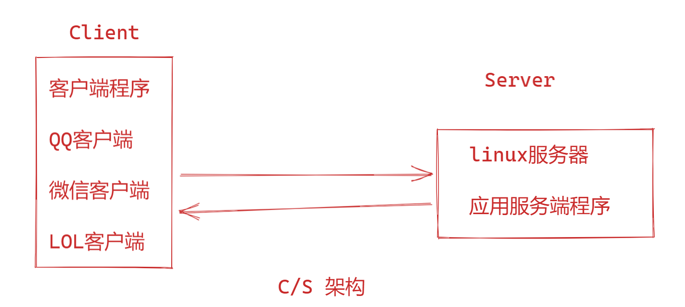
3、两者区别
B/S： 1、广域网，只需要有浏览器即可 2、一般面向整个互联网用户，安全性低 3、维护升级简单
C/S： 1、需要具体安装对应的软件 2、一般面向固定用户，安全性较高
我们是怎么访问的淘宝网？
1.www.taobao.com，浏览器访问网站，IP+port
2.淘宝APP
https://www.yuchaoit.cn:443
比如这样一个完整的URL，包括了协议，主机名，端口号
3、端口号设定
说明:端口号只有整数，范围是从0 到65535
• 1～255：一般是知名端口号，如:ftp 21号、web 80、ssh 22、telnet 23号等 • 256～1023：通常都是由Unix系统占用来提供特定的服务 • ==1024~5000==：客户端的临时端口，随机产生 • 大于5000：为互联网上的其他服务预留，工作里一般建议直接用大于5000的端口，并且要使用netstat命令检查下。
3.1 系统默认服务端口
[root@yuchao-linux01 ~]# cat /etc/services |wc -l
11176
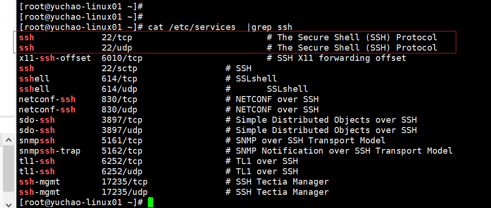
你看，这linux默认有11176个默认端口，表示每一个程序，默认启动后，会打开这个端口，提供访问。
那么如果黑客根据这个服务表，大规模，批量扫描这些端口，以及尝试暴力用密码登录，那你的服务器就很危险了。
4、常见的网络服务
- 文件共享服务：==FTP、SMB、NFS==
- 域名管理服务：==DNS==
- 网站服务：==Apache(httpd)==、Nginx、Lighttpd、IIS
- 邮件服务: Mail
- 远程管理服务：==SSH==、telnet
- 动态地址管理服务:DHCP
5、SSH服务概述
熟悉Linux的人那肯定都对SSH不陌生。
ssh是一种用于安全访问远程服务器的协议，远程管理工具。
它之所以集万千宠爱为一身，就是因为它的安全性。那么它到底是怎么样来保证安全的呢？到底是如何工作的呢？
首先，在讲SSH是如何保证安全的之前，我们先来了解以下几个密码学相关概念：
1、加密算法（了解）
①对称加密算法(DES)
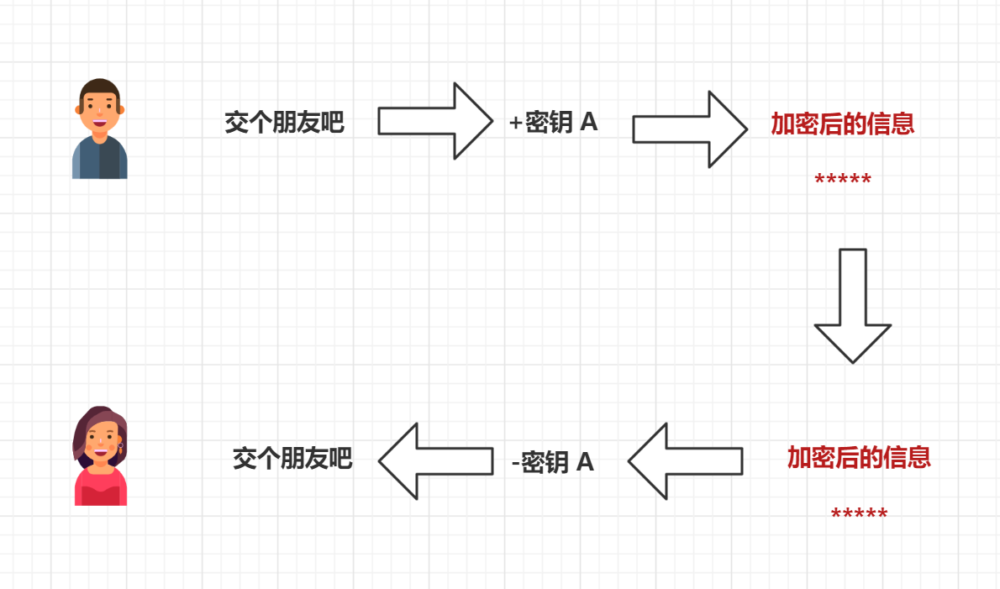
1.于超想和一个美女，杰西卡打招呼，但是又怕被女朋友发现，因此于超用了一个加密算法，比如通过一个密钥A来给打招呼的信息加密，得到一个密文数据，其他人是看不懂的，再发给这位外国美女杰西卡。
2.杰西卡收到消息后，必须通过同样的密钥A解密，才能看懂这句话，"交个朋友吧"
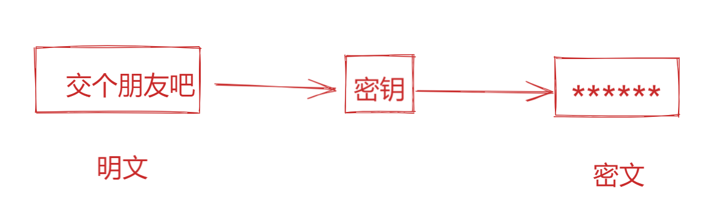
3.加密算法是指通过程序对明文计算处理后，得到一个无法直观看懂的数据。
总结
1.发送方，使用密钥、对明文数据加密，然后再发出去
2.接收方，必须用同一个密钥、对密文解密，才能转为明文。
3.如果明文数据不加密直接发送，是非常危险的，很容易就被其他人捕获，比如于超给美女打招呼，立马被女朋友发现，当场腿打断。
4.对称加密强度很高，难以破解，问题是当机器数量较多的时候，大量的发送密钥，难以保证密钥安全性，一旦某一个Client被窃取密钥，其他机器的安全性也就崩塌了，因此，非对称加密应运而生
②非对称加密算法(RSA)
非对称加密分为：公钥（Public Key）与私钥（Private Key）
使用公钥加密后的密文，只能使用对应的私钥才能解开，破解的可能性很低。
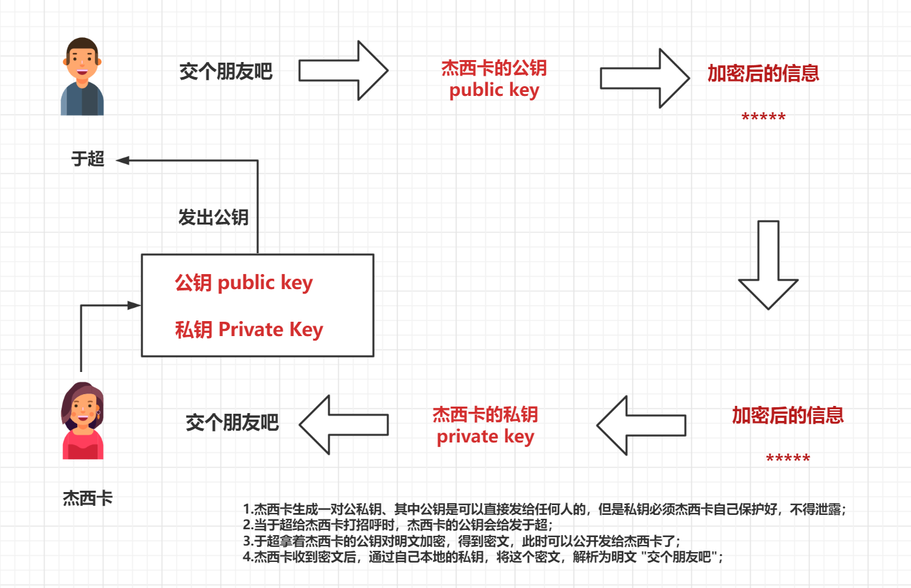
1.杰西卡生成一对公私钥、其中公钥是可以直接发给任何人的，但是私钥必须杰西卡自己保护好，不得泄露；
2.当于超给杰西卡打招呼时，杰西卡的公钥会给发于超；
3.于超拿着杰西卡的公钥对明文加密，得到密文，此时可以公开发给杰西卡了；
4.杰西卡收到密文后，通过自己本地的私钥，将这个密文，解析为明文 "交个朋友吧"；
总结：
1.发送方（于超）使用接收方（杰西卡）发来的
公钥将明文数据加密为密文，然后再发出;2.接收方（杰西卡）收到密文消息后，用自己本地保存的
私钥解密这个密文，最终得到明文数据；
2、对称、非对称加密算法区别是？
- ==对称加密==
- 使用==同一个密钥==进行加密和解密，密钥容易泄露
- ==加密速度快==，效率高，==数据传输==速度==快==，安全性较==低==
- ==非对称加密==
- 使用==不同的密钥==（公钥和私钥）进行加密和解密
- ==加密速度==远远==慢==于对称加密，==数据传输==速度==慢==，安全性较==高==
由于机器配置足够高，网速足够快，这些快慢几乎区别不大，只有在大规模机器数量下，才能看出区别。
既然知道了关于对数据要加密后再传输，否则就是不安全的。
这就指的是，当我们用ssh命令登录时，输入的账户密码，也是被加密后发送给linux服务器的，要么多不安全。
3、SSH认证方式
我们登录linux服务器，使用ssh登录的话有两种认证方式
- 账户密码
- 密钥认证
4、SSH基于用户名密码认证原理（重点）
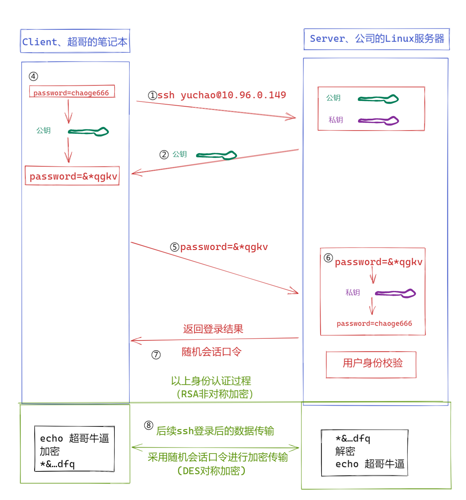
1.SSH客户端向SSH服务端发起登录请求
2.SSH服务端将自己的公钥发给SSH客户端
注意，如果是首次建立连接，会有如下指纹信息确认，让用户确认自己连接的机器信息正确。
yu@DESKTOP-1TDLFH9 MINGW64 ~/Desktop
$ ssh root@10.96.0.149
The authenticity of host '10.96.0.149 (10.96.0.149)' can't be established.
ECDSA key fingerprint is SHA256:vjyKCLajbwDmNfuX7Ld9ycWYnad8oxxndE/aVLEH13Y.
Are you sure you want to continue connecting (yes/no/[fingerprint])? yes
Warning: Permanently added '10.96.0.149' (ECDSA) to the list of known hosts.
root@10.96.0.149's password:
Last login: Thu Feb 10 17:05:25 2022 from 10.96.0.1
[root@yuchao-linux01 ~]#
[root@yuchao-linux01 ~]#
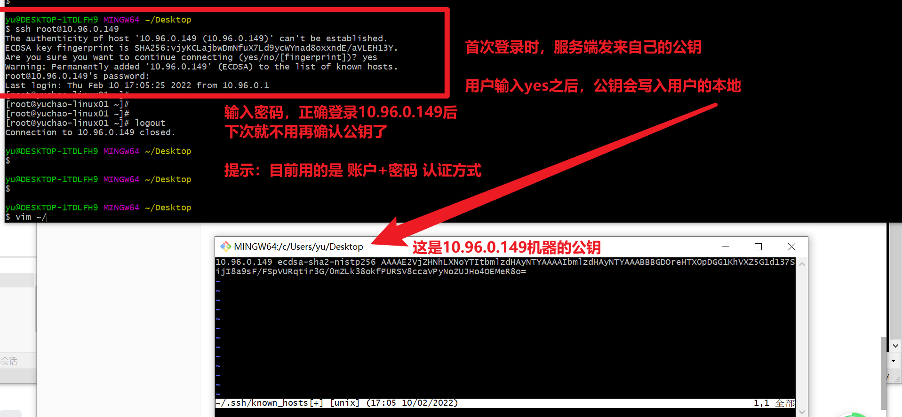
3.SSH客户端、使用服务端发来的公钥，将超哥输入的密码加密为密文后，再发给SSH服务端；
4.SSH服务端收到密文密码后，再用自己本地的私钥解密，看到超哥输入的密码；
5.SSH服务端将解密后的明文，和linux上的用户密码文件做对比，/etc/shadow，正确则登录成功
6.ssh认证成功后，返回登录成功，并且返回一个随机会话口令给客户端，这个随机口令用于后续两台机器之间的数据通信加密。
总结
1.ssh登录时，为了最大程度保证账户、密码安全，使用非对称加密；
2.登录后，客户端、服务端之间的数据通信，采用随机口令，进行对称加密，因为速度快；
5、SSH总结
SSH是Linux下远程管理的工具，相比Telnet安全，运维人员必备的神器！
SSH的全称Secure Shell，安全的shell，是Client/Server架构，默认==端口号为22，TCP协议==
学会SSH通信加密的原理、过程
6、SSH服务配置
1、搭建所有服务的套路
- 关闭防火墙和selinux(实验环境都先关闭掉)
- 配置yum源(公网源或者本地源)
- 软件安装和检查
- 了解并修改配置文件
- 启动服务检查运行状态并设置开机自启动
2、搭建SSH服务
（一）关闭防火墙和selinux
# 关闭firewalld防火墙
# 临时关闭
systemctl stop firewalld
# 关闭开机自启动
systemctl disable firewalld
# 关闭selinux
# 临时关闭
setenforce 0
# 修改配置文件 永久关闭
vim /etc/selinux/config
SELINUX=disabled
（二）配置yum源
注意：一般情况下使用网络源即可。
如果==没有网络==的情况下，才需要配置本地源
# mv /etc/yum.repos.d/CentOS-Base.repo /etc/yum.repos.d/CentOS-Base.repo.backup
# wget -O /etc/yum.repos.d/CentOS-Base.repo https://mirrors.aliyun.com/repo/Centos-7.repo
# yum clean all
# yum makecache
这个yum源配置，看超哥前面笔记
（三）软件安装
①确认是否安装
[root@yuchao-linux01 ~]# rpm -qa|grep openssh
openssh-clients-7.4p1-16.el7.x86_64 客户端安装包
openssh-server-7.4p1-16.el7.x86_64 服务端安装包
openssh-7.4p1-16.el7.x86_64 客户端、服务端公共依赖包
②查看openssh-server软件包的文件列表
[root@yuchao-linux01 ~]# rpm -ql openssh-server
# 配置文件
/etc/ssh/sshd_config
/etc/sysconfig/sshd
# 服务管理脚本
/usr/lib/systemd/system/sshd.service => systemctl start sshd
# 文件共享服务 提供文件上传下载的服务
/usr/libexec/openssh/sftp-server
# 二进制文件程序文件
/usr/sbin/sshd
# 公钥生成工具
/usr/sbin/sshd-keygen
# man手册
/usr/share/man/man5/sshd_config.5.gz
/usr/share/man/man8/sftp-server.8.gz
/usr/share/man/man8/sshd.8.gz
③查看openssh-clients软件包的文件列表
rpm -ql openssh-clients
# 客户端配置文件
/etc/ssh/ssh_config
# 远程copy命令 服务器间进行文件传输
/usr/bin/scp
# sftp客户端 上传下载文件操作
/usr/bin/sftp
/usr/bin/slogin
/usr/bin/ssh
/usr/bin/ssh-add
/usr/bin/ssh-agent
/usr/bin/ssh-copy-id
/usr/bin/ssh-keyscan
# 客户端man手册
/usr/share/man/man1/scp.1.gz
/usr/share/man/man1/sftp.1.gz
/usr/share/man/man1/slogin.1.gz
/usr/share/man/man1/ssh-add.1.gz
/usr/share/man/man1/ssh-agent.1.gz
/usr/share/man/man1/ssh-copy-id.1.gz
/usr/share/man/man1/ssh-keyscan.1.gz
/usr/share/man/man1/ssh.1.gz
/usr/share/man/man5/ssh_config.5.gz
/usr/share/man/man8/ssh-pkcs11-helper.8.gz
（四）查看了解并修改配置文件
man 5 sshd_config
[root@yuchao-linux01 ~]# cat /etc/ssh/sshd_config
解决需求，禁止root登录，必须用普通用户，降低权限
vim /etc/ssh/sshd_config
# 打开文件第38行 修改以下内容
#PermitRootLogin yes
PermitRootLogin no
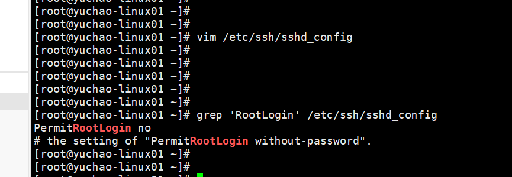
改了配置文件就得重启
（五）服务管理
# 重启服务
systemctl restart sshd
# 查看状态
systemctl status sshd
# 进程查看方式
ps aux |grep sshd
# 端口查看方式
netstat -lntp|grep sshd
# 开启自启动
systemctl enable sshd
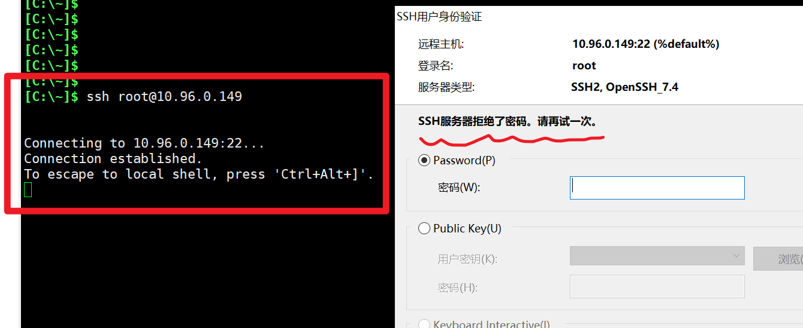
只能用普通用户登录
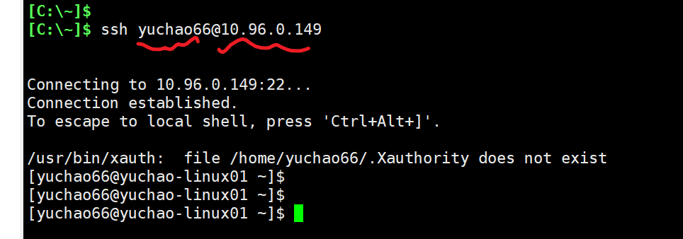
练习结束，为了方便，可以再改回来。
允许root登录
7、任务解决方案
- 环境准备
| IP地址 | 主机名称 | 服务器角色 |
|---|---|---|
| 10.96.0.146 | jumpserver | 跳板机 |
| 10.96.0.149 | real-server | 真实业务服务器 |
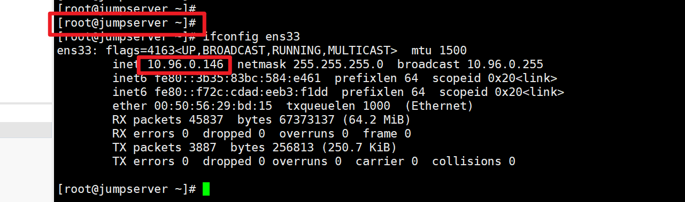
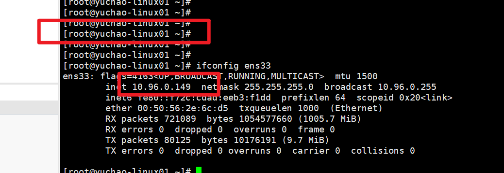
1、创建用户并授权（跳板机上操作）
公司的测试服务器、有很多人用
1.测试组 testgroup
2.开发组 devgroup 、用户devyu
3.运维组 opsgroup、用户opsyu
（一）用户和用户组创建
①添加用户组，开发组
groupadd devgroup
②添加用户到用户组中
[root@jumpserver ~]# groupadd devgroup
[root@jumpserver ~]#
[root@jumpserver ~]#
[root@jumpserver ~]# useradd -g devgroup devyu
[root@jumpserver ~]#
[root@jumpserver ~]# id devyu
uid=9662(devyu) gid=9663(devgroup) groups=9663(devgroup)
（二）使用非交互式设置密码
[root@jumpserver ~]# echo 123456 |passwd --stdin devyu
Changing password for user devyu.
passwd: all authentication tokens updated successfully.
（三）为开发人员创建数据目录并且设置相应的权限
创建目录
[root@jumpserver ~]# mkdir -p /devyu/data/
[root@jumpserver ~]#
[root@jumpserver ~]# ll -d /devyu/data
drwx-wx-wx 2 root root 6 Feb 10 18:15 /devyu/data
修改目录属组
[root@jumpserver ~]# chgrp -R devgroup /devyu/
查看权限
[root@jumpserver ~]# ll -d /devyu
drwx-wx-wx 3 root devgroup 18 Feb 10 18:15 /devyu
设置黏滞位，防止other用户，随便删除别人的数据
加上-R参数，递归该目录下所有的文件夹
[root@jumpserver ~]# chmod -R 1777 /devyu
[root@jumpserver ~]#
[root@jumpserver ~]# ll -d /devyu/*
drwxrwx--T 2 root devgroup 6 Feb 10 18:15 /devyu/data
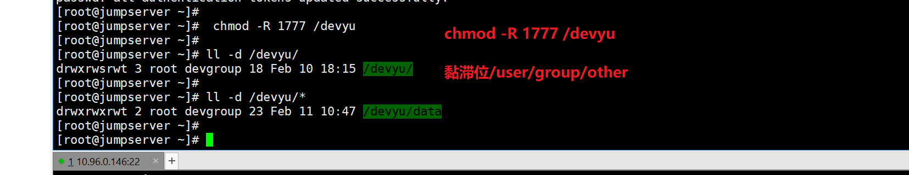
（四）测试结果
测试用户权限是否设置成功，可以结合第（三）步一起完成
注意看效果
黏滞位的作用是，给文件夹设置黏滞位，t权限
然后该目录内的文件，只有属主、以及root才可以删除、移动文件。
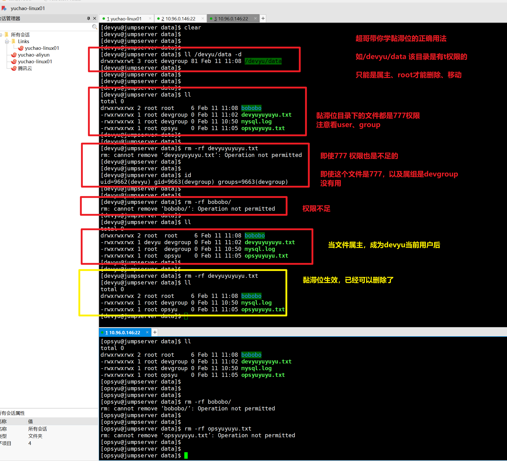
2、禁止root远程登录
注意：在生产服务器server端完成
参见上面sshd的配置文件的操作
3、更改默认端口
需求：防止扫IP使用默认端口暴力破解(一次一次试)。故将默认端口更改为：22122
（一）确定当前服务器端口没有被占用
[root@jumpserver ~]# netstat -tunlp|grep 22122
[root@jumpserver ~]#
[root@jumpserver ~]# ss -anlp|grep 22122
[root@jumpserver ~]#
[root@jumpserver ~]# lsof -i:22122
[root@jumpserver ~]#
（二）修改配置文件
[root@jumpserver ~]# grep 'Port' /etc/ssh/sshd_config
Port 22122
#GatewayPorts no
（三）、重启sshd服务
[root@jumpserver ~]# systemctl restart sshd
[root@jumpserver ~]#
[root@jumpserver ~]#
[root@jumpserver ~]#
[root@jumpserver ~]# systemctl reload sshd
[root@jumpserver ~]#
检查最新的端口
[root@jumpserver ~]# netstat -tnlp|grep 22122
tcp 0 0 0.0.0.0:22122 0.0.0.0:* LISTEN 27504/sshd
tcp6 0 0 :::22122 :::* LISTEN 27504/sshd
[root@jumpserver ~]#
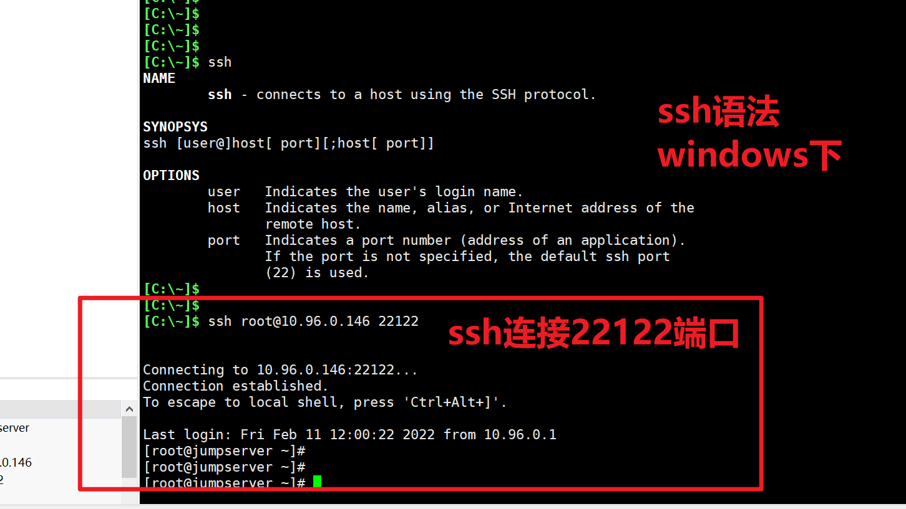
4、用户密码随机
注意：在线上生产环境中创建一个开发人员专用的账号,devyuchao
思路：
1、在线上生成环境，创建公共账号(开发人员)
2、安装随机密码生成工具pwgen
3、使用pwgen工具生成随机密码
4、给账号设置密码
（一）创建用户
useradd devyuchao
（二）安装pwgen
pwgen软件需要配置epel源安装
wget -O /etc/yum.repos.d/epel.repo http://mirrors.aliyun.com/repo/epel-7.repo
②安装pwgen
[root@jumpserver ~]# yum install -y pwgen
（三） 生成随机密码
pwgen支持的选项。
-c或-大写字母
在密码中至少包含一个大写字母
-A或--不大写
不在密码中包含大写字母
-n 或 --数字
在密码中至少包含一个数字
-0 或 --no-numerals
不在密码中包含数字
-y或--符号
在密码中至少包括一个特殊符号
-r <chars> 或 --remove-chars=<chars>（删除字符
从生成密码的字符集中删除字符
-s 或 --secure
生成完全随机的密码
-B 或--模棱两可
不要在密码中包含模棱两可的字符
-h 或 --help
打印一个帮助信息
-H 或 --sha1=path/to/file[#seed] 。
使用指定文件的sha1哈希值作为（不那么）随机生成器
-C
以列形式打印生成的密码
-1
不在列中打印生成的密码
-v或--不使用元音
不要使用任何元音，以避免意外的讨厌的字。
[root@jumpserver ~]# pwgen -n
Faa4tie4 ahX3Ahki hu3Aejae peV5nio2 ohz2Phoo ye4aeyuM AhYaR3nu Che3aeku
ahf7eePh sieSi4ai oa5baiCu ooNg2eoP tow1zahV Ohbuo4ph Aef3jooS pe3Iu0oo
pee7jaCa dah5ujeY Eec3Chie oomohG0a Ait0um7t OhF3mu8U eexo7AeY Thee4bu2
Aa2Iesei Erahvi6i IK9cohB7 rei0ohTh Rohb7zur rahz4huV raiQu1Ja qui8ooJ1
ge2Uo1wi oQu6Yoof Te3ihoon Moheib4u OoCh2Bu2 xoBoo8ai iegahSh0 Ja7Ahgie
Ohwoh4ak ahqueo9X Tae8uiku oz0ieSoo yiePh7gu Phahm4Qu eth2Eixe OPh0vooj
gaeNaiC6 Ahthai0u see6cu2H Eithoh8x die6ohJu Soo2aegh pe6acheT Uu8Ohn7b
zieSie8u fe1eiN9e maiwuM5n ioYoh3ka Ohoov7Ee Wahvova3 Upheo7oZ Ahneev2j
Ir9fug1e Lou3oe1D sheiM0vi eu8aeThi eeZ9eipu Jee6So0w jo7Faehe fahWu8ah
Ke4agiiy ca5zai3I rohL3Sha utoo5Gi5 Pie6Aa3i ood7Faic de4Aing9 Eevoe0ir
ooT7naic Lahpae6k Kuoquei7 MoKohR5o Lo8oiw3j Gaiz6uyu Ahshaix9 Lei8xahx
ui6pooYi bohJ5aed Phu0oove iePh9OoD Dah4ties paeR0Cox OoX9eefa ena6re7U
aith5EiP paeNgu3e yae3Fohh ieB0GiKe rie9Ohk5 gieKa6oh ra9leeNa Baipeif1
eShough0 Theet6ze xiaDae7r Iero1Oh0 afie0Ohl Io0Ih0Ug eiyee0Ae Lah2aiTh
Sieh6ohv zooNg5sh Eaz5Xaiv Heed7ahf Ahcaibo0 AoZ0foe4 Biexeij1 Zetee5he
Laif5ong fe8li1Ch eizi3ooM ing2Okou Thai9Oat Ahph7Eek aeQuaet0 phaeHoh0
Joa4thai beex8eaK Wae5aey0 Uqu8buHa Ausie6ka Iehe7be9 Bal0Aele ahN1Oshe
oovaeh0E oochah2R Lu1eur8I yu5Sie4y eaJ2eaNu Sae7eeda Bid2ba0m geD7Aeku
Hui3diej veibiuK4 OhHaith2 AhX6OoDo iju8ahNi seeNg9sh caesho7L shahr4eG
Ni3xoh3r ek5Saesh ooRohgh0 eo7ey9Da aiMee3ho ieB1ahM9 OhShai3e ezie3Uoh
（四）设置用户密码
echo eo7ey9Da |passwd --stdin devyuchao
此时可以用这个随机密码，登录服务器。
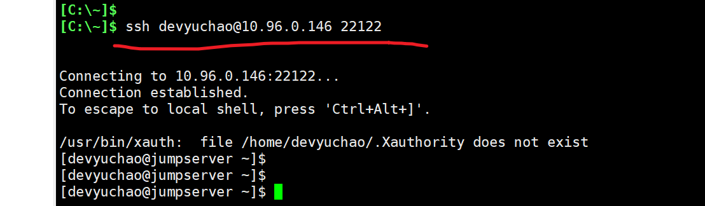
随机生成指定风格的密码
打印，包含大写字母、数字、不包含特殊歧义、完全随机、且一行一个密码、密码长度为8、生成5个密码。
[root@jumpserver ~]# pwgen -cnBs1 8 5
3MwPLJwi
TAeqdf3h
rXn4EojU
9hJw3XWK
9k4rzxfM
本章总结
- 掌握ssh认证方式
- ssh通信加密方式原理、流程。
- 密码模式、公钥模式（免密码登录，待会超哥再补充）
- 禁止root登录服务器，增强服务器安全性
- 更改ssh服务默认端口，增强服务器安全性
- 熟练使用ssh客户端工具，xshell、ssh命令、secureCRT等。
课外补充
1、ssh客户端工具
- 查看参数和帮助方法
==ssh --help==
==man ssh==
常见参数
- windows
- linux
- macos
- 提供的ssh命令，会有些区别，查看帮助后使用即可。
linux下ssh远程登录
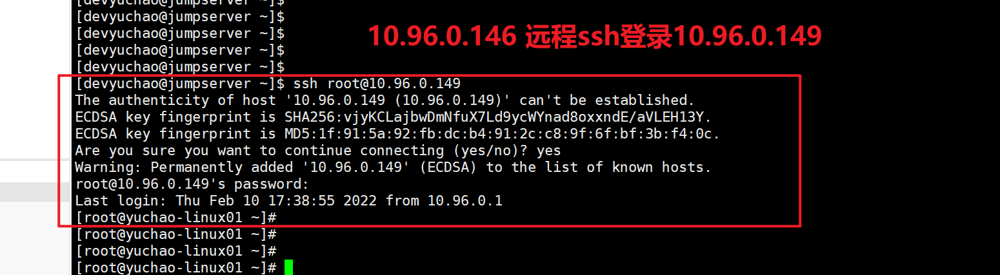
windows下远程登录
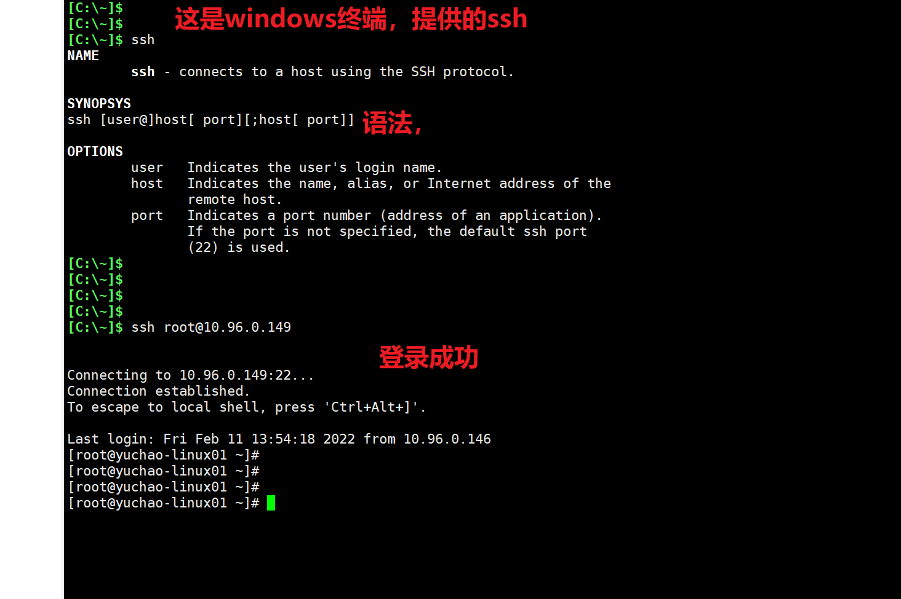
常见参数
-p ssh端口
-l 远程用户名，如果不指定用户，会使用当前默认的登录用户名。
[yuchao66@yuchao-linux01 ~]$ ssh -l root -p 22122 10.96.0.146
root@10.96.0.146's password:
Last login: Fri Feb 11 12:06:10 2022 from 10.96.0.1
[root@jumpserver ~]#
[root@jumpserver ~]#
[root@jumpserver ~]#
[root@jumpserver ~]#
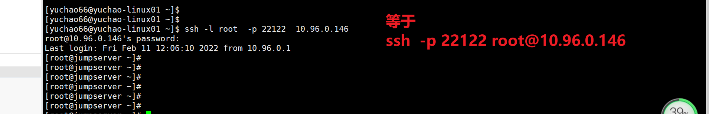
xshell工具，其实就是帮你执行ssh命令。
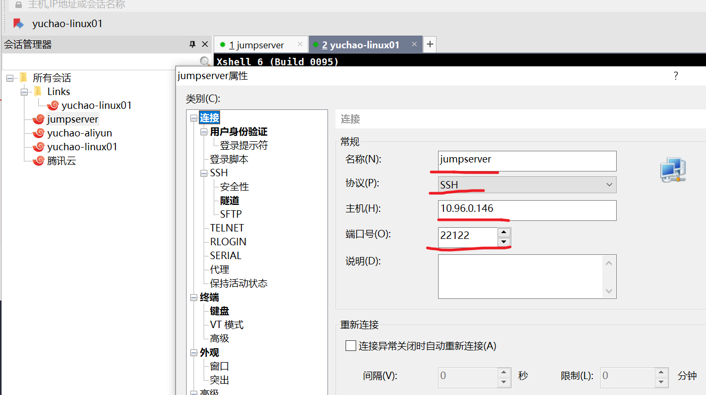
2、踢掉用户下线
who命令
w命令
查看当前机器登录用户信息
看看自己是谁
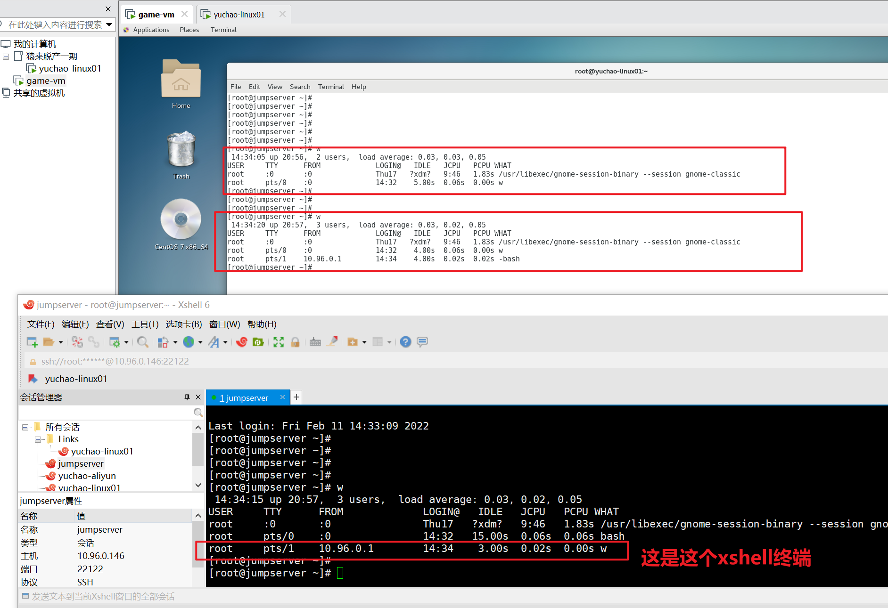
干掉用户，让他下线。
干掉这个xshell。
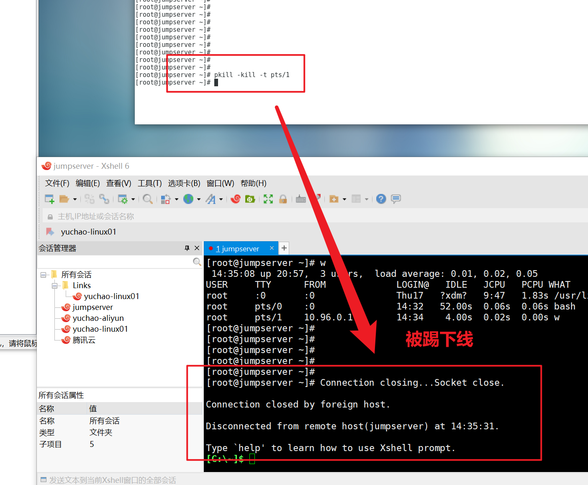
3、免密登录（重点）
经过一段时间后，开发人员和运维人员都觉得使用密码SSH登录的方式太麻烦（每次登录都需要输入密码，难记又容易泄露密码）。
为了安全和便利性方面考虑，要求运维人员给所有服务器实现免密码登录。
任务要求
所有开发人员通过远程管理用户devyuchao登录生产服务器实现免密码登录。
任务拆解
- ==理解免密登录原理==
- ==根据需求针对不同用户配置免密登录==
涉及知识点
- 免密登录原理（==理解==）
- 用户生成秘钥对（公钥和私钥）
- 免密码登录配置（==重点==）
课程目标
- 了解sshd服务的认证方式
- 理解免密等原理
- ==能够根据需求对用户进行免密码登录配置==
理论储备
ssh认证方式（精简版）
1、账户密码认证
10.96.0.146 jumpserver ，ssh服务端
↑↑↑↑↑↑↑↑↑↑↑↑↑↑↑↑↑↑↑↑↑↑↑↑↑↑↑↑↑↑↑↑↑↑↑ 远程登录
10.96.0.149 yuchao-linux01 ssh客户端
服务端的公私钥文件
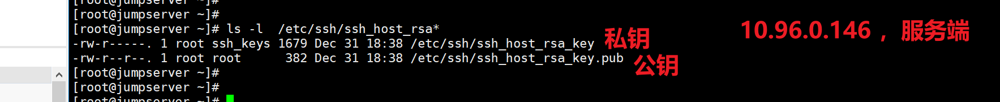
[root@jumpserver ~]# ls -l /etc/ssh/ssh_host_rsa*
-rw-r-----. 1 root ssh_keys 1679 Dec 31 18:38 /etc/ssh/ssh_host_rsa_key
-rw-r--r--. 1 root root 382 Dec 31 18:38 /etc/ssh/ssh_host_rsa_key.pub
[root@jumpserver ~]#
[root@jumpserver ~]#
客户端用于保存公钥的文件。
[root@yuchao-linux01 ~]#
[root@yuchao-linux01 ~]# cat ~/.ssh/known_hosts
10.96.0.146 ecdsa-sha2-nistp256 AAAAE2VjZHNhLXNoYTItbmlzdHAyNTYAAAAIbmlzdHAyNTYAAABBBGDOreHTX0pDGG1KhVXZ5G1d137SijI8a9sF/FSpVURqtir3G/0mZLk38okfPURSV8ccaVPyNoZUJHo4OEMeR8o=
10.96.0.147 ecdsa-sha2-nistp256 AAAAE2VjZHNhLXNoYTItbmlzdHAyNTYAAAAIbmlzdHAyNTYAAABBBGDOreHTX0pDGG1KhVXZ5G1d137SijI8a9sF/FSpVURqtir3G/0mZLk38okfPURSV8ccaVPyNoZUJHo4OEMeR8o=
[root@yuchao-linux01 ~]#
[root@yuchao-linux01 ~]#
这个文件就存放着，已经连接过的ssh服务端的公钥信息，可以删除，然后需要重新yes确认。
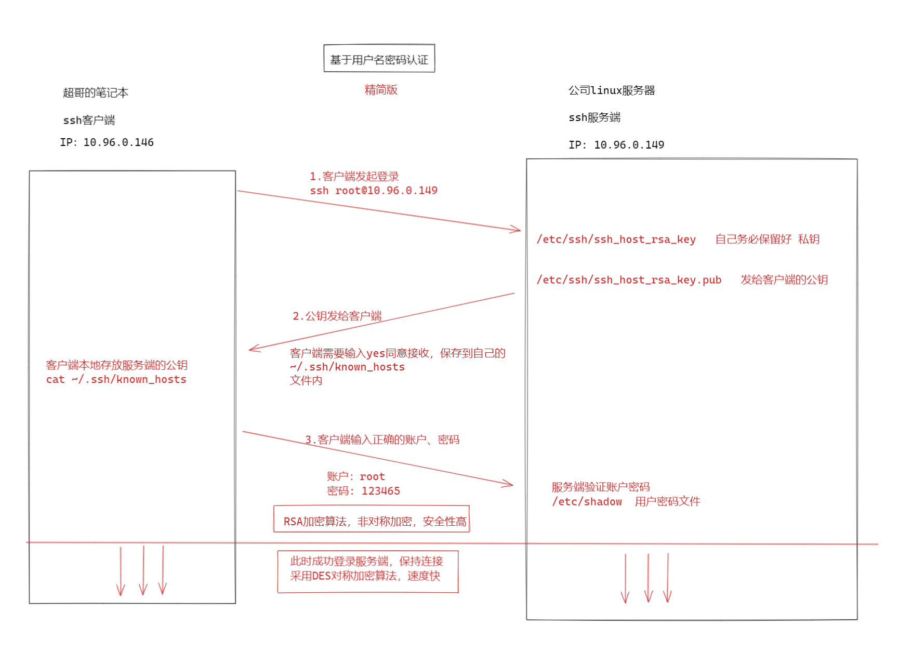
2、基于密钥对的认证
基于密钥对认证，也就是所谓的免密码登录，理解免密登录原理：
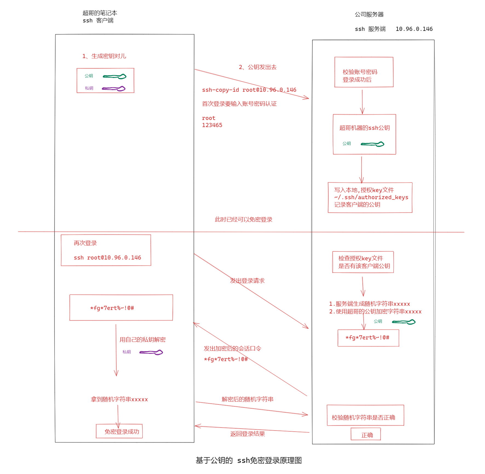
3、基于密钥对的免密登录（实践）
原理很复杂，超哥给你讲原理，是因为当你发现免密登录失败时候，你应该去哪一个环节找问题，这是你的解决思路！
其实部署操作很简单。

实际免密登录过程
1.在你想免密登录的机器上执行，比如windows，免密登录linux机器
yu@DESKTOP-1TDLFH9 MINGW64 ~/.ssh
# 这个是最重要的命令
$ ssh-keygen
Generating public/private rsa key pair.
Enter file in which to save the key (/c/Users/yu/.ssh/id_rsa):
/c/Users/yu/.ssh/id_rsa already exists.
Overwrite (y/n)? y
Enter passphrase (empty for no passphrase):
Enter same passphrase again:
Your identification has been saved in /c/Users/yu/.ssh/id_rsa
Your public key has been saved in /c/Users/yu/.ssh/id_rsa.pub
The key fingerprint is:
SHA256:/kalajC4h7ZsGEITXc9KW9x68gJHj+Xa7+uFaRJvzIw yu@DESKTOP-1TDLFH9
The key's randomart image is:
+---[RSA 3072]----+
| . .. |
| . . + . |
| . . * o |
| o . = * . |
|. . = =S= o |
|. . . =.* X o |
| . o o =.E X . |
| ..= . +.* . |
| ooo . .+=. |
+----[SHA256]-----+
yu@DESKTOP-1TDLFH9 MINGW64 ~/.ssh
$ pwd
/c/Users/yu/.ssh
yu@DESKTOP-1TDLFH9 MINGW64 ~/.ssh
$ ls
id_rsa id_rsa.pub known_hosts
免密登录命令，把客户端的公钥，发给服务器。
yu@DESKTOP-1TDLFH9 MINGW64 ~/.ssh
$ ssh-copy-id root@10.96.0.149
/usr/bin/ssh-copy-id: INFO: Source of key(s) to be installed: "/c/Users/yu/.ssh/id_rsa.pub"
/usr/bin/ssh-copy-id: INFO: attempting to log in with the new key(s), to filter out any that are already installed
/usr/bin/ssh-copy-id: INFO: 1 key(s) remain to be installed -- if you are prompted now it is to install the new keys
root@10.96.0.149's password:
Number of key(s) added: 1
Now try logging into the machine, with: "ssh 'root@10.96.0.149'"
and check to make sure that only the key(s) you wanted were added.
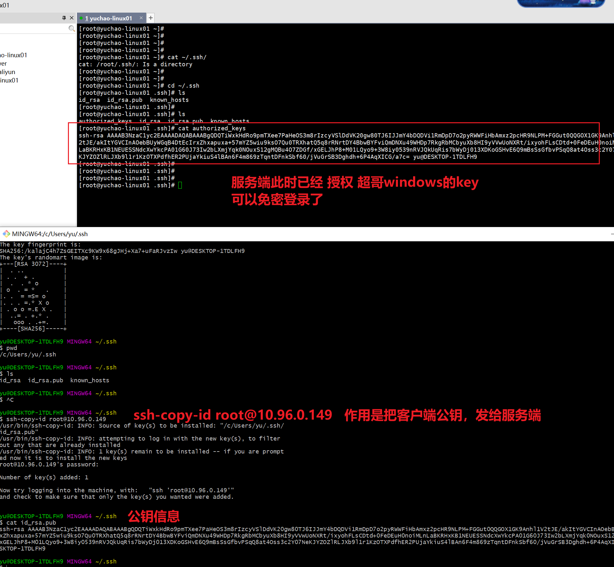
此时就可以免密登录了。
yu@DESKTOP-1TDLFH9 MINGW64 ~/.ssh
$
s
yu@DESKTOP-1TDLFH9 MINGW64 ~/.ssh
$ ssh root@10.96.0.149
Last login: Fri Feb 11 14:56:48 2022 from 10.96.0.1
[root@yuchao-linux01 ~]#
[root@yuchao-linux01 ~]#
超哥这里是教大家用windows免密连接linux
linux之间也是一样的操作。
扩展总结
图解SSH加密算法
对称加密
- des 对称的公钥加密算法,安全低，数据传输速度快；使用同一个秘钥进行加密或解密
- rsa 非对称的公钥加密算法,安全,数据传输速度慢 ，SSH默认的加密算法

非对称加密
上面的数据是加密了，这个钥匙，如果丢了怎么办？被别人恶意获取到不还是危险吗？

中间人攻击

【Client如何保证自己接收到的公钥就是来源于目标Server机器的？】
上图看似理所当然，然而此时一位不愿意透露姓名的黑客路过，并且做了如下事情
- 拦截客户端的登录请求
- 向客户端发送
黑客自己的公钥，这时客户端可能并不知道，并且用了此公钥对数据进行了加密 - 客户端发送
假的公钥，加密后的数据，黑客拿到了此加密后的数据，再用自己的私钥进行解密 - 客户端的数据此时已被黑客截取
ssh安全登录
问题： SSH中是如何解决这个问题的呢？
答：基于用户名密码认证和密钥对认证。
- ==基于用户密码的认证==
1.在首次ssh登录时，客户端需要确认服务器的信息，理论上应该是对公钥的确认，由于公钥通过RSA算法加密，太长，不好直接比较，所以给公钥生成一个hash(sha256)的指纹，方便比较。
# 指纹信息，写入在，known_hosts文件里
[root@yuchao-linux01 .ssh]# ssh root@10.96.0.146
The authenticity of host '10.96.0.146 (10.96.0.146)' can't be established.
ECDSA key fingerprint is SHA256:vjyKCLajbwDmNfuX7Ld9ycWYnad8oxxndE/aVLEH13Y.
ECDSA key fingerprint is MD5:1f:91:5a:92:fb:dc:b4:91:2c:c8:9f:6f:bf:3b:f4:0c.
Are you sure you want to continue connecting (yes/no)?
这表示，当前无法确认这个10.96.0.146机器的真实性，但是得知了它的指纹，你自己确认下，是不是你要连接的机器。
2.一般不需要做这些事，我们既然学习其原理，可以来看下服务端的指纹
[root@jumpserver ~]# ssh-keygen -E SHA256 -lf /etc/ssh/ssh_host_ecdsa_key.pub
256 SHA256:vjyKCLajbwDmNfuX7Ld9ycWYnad8oxxndE/aVLEH13Y no comment (ECDSA)
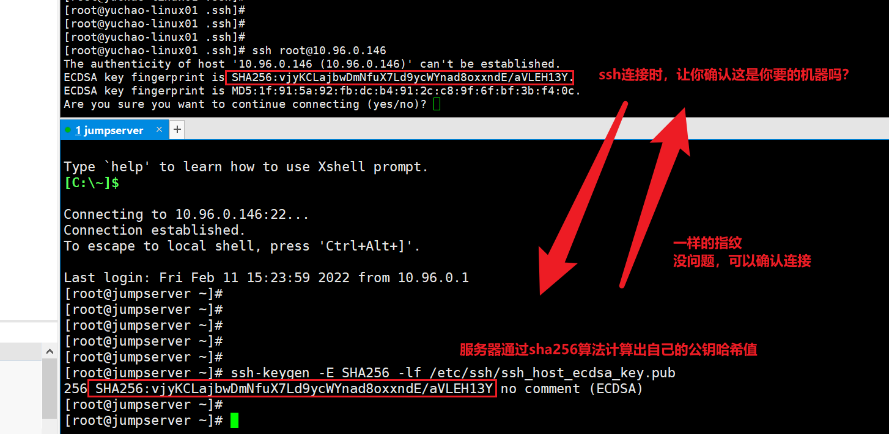
3.当你输入yes之后，输入账号密码，正确后，即可登录服务器。
该server的公钥就会被放到client的家目录 ~/.ssh/known_hosts文件里
便于下次连接，不用再确认公钥
客户端机器
[root@jumpserver ~]# cat ~/.ssh/known_hosts
10.96.0.146 ecdsa-sha2-nistp256 AAAAE2VjZHNhLXNoYTItbmlzdHAyNTYAAAAIbmlzdHAyNTYAAABBBGDOreHTX0pDGG1KhVXZ5G1d137SijI8a9sF/FSpVURqtir3G/0mZLk38okfPURSV8ccaVPyNoZUJHo4OEMeR8o=
关于ssh连接的文件总结
目录所在
[root@jumpserver ~]# ls ~/.ssh/
authorized_keys id_rsa id_rsa.pub known_hosts
- Known_hosts：当Client接收Server的公钥以后，Server的公钥信息会放在Client
$HOME/.ssh/known_hosts文件中，下次再次连接的时候，系统能够识别出Server的公钥已经存在了本地，因此可以跳过警告部分，直接提示输入密码了.- 保存已认证的远程主机公钥；
- authorized_keys：Server远程主机将
用户的公钥，保存在已登录用户的$HOME/.ssh/authorized_keys文件中。- 用于免密登录会用到，保存已授权的客户端公钥；
- id_rsa：私钥文件
- id_rsa.pub：公钥文件
加密. 将明文信息变为难以读取的密文内容，让其不可读 ↩
加密算法. 加密算法就是加密的方法 ↩